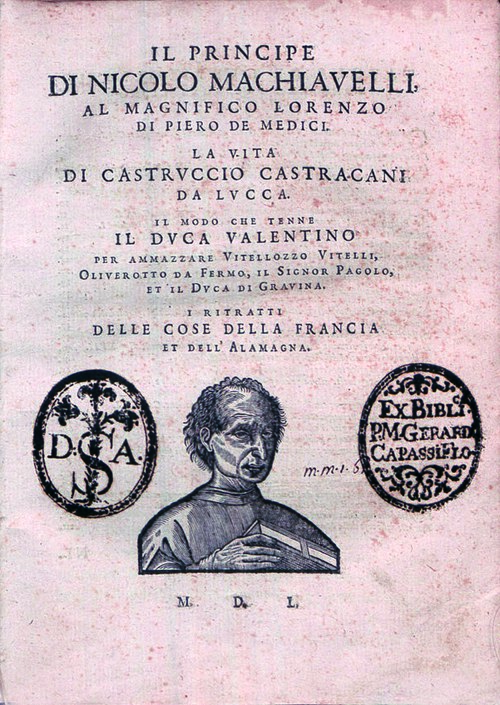
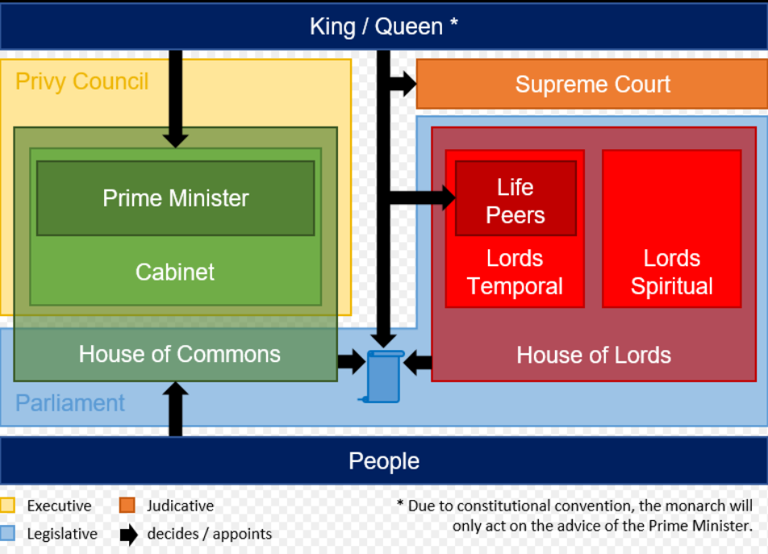
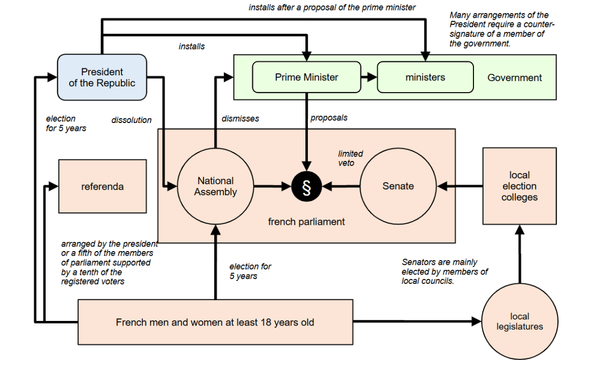

2. 美国，重新发明“国家”
大家好，我是杨照。
使“国家”成为现实
要理解公民，要讨论公民，一定会牵涉到什么是“国家”。在人类历史上，国家的性质、国家的定义一直不断地在改变。像中古时期，教会最大，相较于教会及教会所代表的“上帝之城”、“上帝之国”，人间的国家是次要的，世俗的政治是不重要的。文艺复兴时代，意大利城邦的兴起，才让世俗政治取得了比较高的地位。因而马基雅维里（Machiavelli）他所写的《君主论》（The Prince）成为了经典，那是一部直接、赤裸裸谈世俗政治的书。

[意]尼科洛·马基雅维里，《君主论》（1550）封面图，来源网络
文艺复兴之后，“国家”才逐渐脱离了教会，有了独立的地位。英王亨利八世创立了“英国国教”，让国王同时担任国教的领袖，等于是世俗的领袖凌驾了宗教领袖，更提高了“国家”的地位。法王路易十四，他的辉煌成就又在国家的历史上开了新的一页，有效改变了欧洲人过去先是认同教会、教派，然后认同封建领主，最后再认同国家、国王的模式。从此之后，“国家”上升成为欧洲人的首要认同。
在我们中国情况又不一样。中国传统抱持着天下中心观，唯我独尊，"国家"的意识相较于天下观，是在近代和西方接触、尤其是感受到西方压迫之后才产生的。这样的国家意识当中，关键的考量在于要如何自我调整，看到中国也只是世界诸国当中其中的一国，思考、安排和其他国家之间的关系。
美国基于民主原则的联邦制，从另外一个方向影响、改变了国家的定义，在国家的组成上做了改变，冲击了原本对于国家和国民关系的想象。在美国之前，欧洲甚至全世界的“国家-国民”关系不外两种模式。一种是透过分层授权的领主制度，下面的一层隶属于上面一层，一层一层往上堆叠起来；另外一种是中央集权，权力从中央放射出去，由中央派遣官员直接统治各个地方的人民。
美国的制度不只是开创了另外一种组织，而且彻底地将组织的原理逆转过来：国家为国民而存在；国民决定国家组成的形式；权力的安排与支配，不是由上而下，而是由下而上。各乡各镇的乡民镇民会议，决定了他们要有一个什么样的州政府，将什么样的事物交给州政府来管辖，又有什么样的事务不准州介入、侵犯。而各州的州议会、州政府决定了联邦政府的权力范围与权力执行的方式。
这种“国家”在美国之前，或许曾经存在于理论思考当中，但从来不曾存在于现实世界里。
总统制：美国民主的特殊发明
在民主的发展过程当中，英国、法国也都在历史上扮演过重要角色。不过到今天，即使是英国、法国，它们的政治制度也都受到美国历史、美国经验强烈的影响。
英国是最老牌的民主国家，为人类提供了最早的民主思想和民主实验。不过，从历史上来看，英国的民主是在封建制度上进行的，是在特定的历史条件下，国王无奈、不得已将部分的权力让渡给他的下属。国王、贵族依然在，由下而上的分权一直都属于拉锯、妥协的结果，属于上下之间的默契，所以没有成文的规定。

英国当前政治架构关系图，图源网络
这样的民主，运作了几百年，一直在动态调整着。但一来，别的国家不可能复制英国的特殊封建历史情境，也就很难模仿英国的例子，去创造出一套可以运作的民主。二来，即使是英国都很难一直维持在这种不成文的传统习惯和信念下，几十年来它的政治制度明显地朝着“成文化”的方向改变，而且每隔一段时间就有很高的呼声，要求将几乎纯粹是历史遗迹、没有实质功能的上议院给废除。
再看法国的状况。法国现实的“第五共和”宪政制度，最大特色是双首长制，总统和总理都是出于民选，都有高度的选民基础，但两个人可以分属于不同政党。双首长制，双头马车，这当然不会是稳定的领导结构，但是反而是这样不稳定的结构，在法国维持了最久的时间。

法国当前政治架构关系图，来源网络
一个原因就是双首长制一方面维持了法国中央集权的历史模式，由总统来代表国家；另一方面以总理来对国会负责，照顾到了分权民意的需求。法国人放不掉中央思维，但一定要找到一种能够落实分权民主的方法，才能够从不断的循环变乱当中解脱出来。
“总统制”是美国民主的特殊发明，原本是为了要因应各州联邦的组织而产生的。英国的民主，则落实在“内阁制”上，不同选区选出自己的代表去参与政治决策，任何要取得政治权力、有所作为的人，都先要是特定选区的代表，以该选区代表的身份才能够取得这样的资格。
美国没有走这条路，因为不能走这条路——有州作为他们的核心单位的基本安排。联邦政府不是直接统治美国国民的，也就不应该由国民选出的代表来行使联邦权力。联邦总统的角色，基本上是各州政府之间的总协调者，联邦政府是服务各州的，而不是统辖美国国民。因而最初的设计，顺理成章是由各州组成选举人团，交由选举人团间接投票来选出总统。
不过，联邦总统的角色无可避免地改变了。因为他既是美国对外的代表，又负责领导联邦军队，而且是跨州事务的总协调者。正因为各州在许多事情上不容易取得共识，现实上，也就等于要由总统来予以裁断，进一步用联邦的组织力量来确保总统的决定可以贯彻。不管原先的设计是怎么样，甚至也不管当上总统的人有什么样的态度，要让美国联邦能够存在、运作、发展，总统因而就非得要取得越来越大的权力不可。
民主是个“好东西”
这只是其中的一个例子，让我们看到，美国事实上是一个人类政治经验的实验场。两三百年的实验当中，创造出了许多过去不曾有过的政治安排，进而，这些新鲜的安排也就改变了政治这件事情的本质，改变了政治和人的生活之间的关系。
我们回头看历史，美国崛起进而影响世界之前的所有社会，不管位于何处、源自什么样的文化传统，他们的政治基本上都是传统型的。传统型政治最大的特色，是我们中文里面所说的“天高皇帝远”，也就是这个社会里绝大部分的人，一辈子都跟政治没什么关系，不需要、也没有机会跟政治发生关系。政治是极少数人的事，除了这极少数人之外，其他人不知道、不需要知道，甚至也无从知道、无从接触政治。他们只有被动地接受政治，不会主动地和政治发生任何关系。
因为美国，更精确地说，因为在美国所进行的这样一场大规模民主制度实验，才产生了今天世界上普遍接受的现代型政治社会。活在现代型的社会当中，每天被政治、政府包围着，我们就很容易忘掉：这样的高度政治化社会是人类历史上的非常状态。
人类历史上的绝大多数时间、绝大多数社会当中，政治和生活保持着遥远的距离，政治只占一般人日常生活意识里很小的一部分，那才是传统型社会当中的常态。今天大家经常而且充分意识到政治的存在，关心政治、讨论政治、参与政治，这是最近一两百年才出现的变化。刺激、创造出这项全球性变化的主要力量，就是美国的经验、美国的民主。
美国的经验就使得民主从一个概念，成为一个事实，进而成为一套让国家富强的秘诀，使得就算欧洲人，就算一贯从文化角度看不起美国的法国，都不得不承认“民主是个好东西”，都不得不将自己的政治制度不断地往民主的方向倾斜调整。
而民主的前提，就是一般人要参与、进而要承担政治决定的责任，也就必然使得关于政治的讯息大量地膨胀，在社会上快速地流传，制造出将社会高度政治化的结果。
共和真的只适用于小国吗？
在美国崛起之前，欧洲对于民主的认知基本上是历史性的。说到民主，浮现在他们脑中的，不会是任何现实国家、现实政权，而是古希腊城邦，以及罗马早期的共和制度。
关于这一部分大家可以参考我们十堂公民课当中的第一堂，讲的是孟德斯鸠和他的名著《论法的精神》。那个时候，在孟德斯鸠的著作里就充分地反映出，从历史上来的知识，让当时欧洲人普遍相信：民主只适用于小型的政治体。
《论法的精神》整理了人类古往今来的政治制度，将所有的政体分成三大类——共和、君主和独裁。共和制度又分成民主，也就是平民共和和贵族共和这两种。
在《论法的精神》第一册第八章，有一节标题是“共和的显著特性”，孟德斯鸠明白地说：
“共和管辖小领域，毋宁是件自然的事，否则共和就无法长期延续。在领土广大的共和国家里，有人控有庞大的财富，因而也就少了节制 ；有太重要的事务无法交给任何一个平民来处理；平民有自己的利益；他很快就会觉得自己有机会可以借着压迫同胞而变得更快乐、更光荣，因此可能会在国家的废墟上建立自己的荣光。
在幅员广大的共和国，公共利益会被千种私人看法所遮蔽；被压服在众多例外与意外之下。在小型共和国里，公共利益比较明显，容易理解；在每个公民的日常行为范围内，违规行为不会那么多，当然，也比较不会被包庇。”
而从相反方向看，孟德斯鸠也主张，民主共和是小型国家最适切的政治制度。他认为，除了在极少数的特殊环境下，非共和政体很难在单一城镇规模的国家长期维持。小国的君主自然会倾向于压迫他的子民，因为他的权力很大，然而可以用来实现他的权力享受或者是尊荣的手段却很有限。结果是他会践踏自己的子民。换一个角度看，这样的君王很容易就会被外来、甚至自身的反对势力给击垮，人民随时可以团结起来推翻他。
类似的看法，散布在《论法的精神》书里许多的地方，更重要的，孟德斯鸠的看法，也就反映了十八世纪中期欧洲的普遍意见。共和只能够在小规模的社会成功，法国、西班牙、波兰、俄罗斯……这种规模的国家是不可能以共和方式来统治的。
在这样的共识背景底下，竟然出现了美国革命。接下来又有《美国宪法》。在北美新大陆的土地上，进行了一场违背欧洲常识的政治实验，要以民主的方式来组构、治理相对庞大的土地和众多的人口。
到了托克维尔写书的1830年代，美国的政治实验基本已经底定了，大规模的民主共和，现在看起来是有可能的。是啊，人类政治道理就必须要加入美国经验来彻底重新思考。而托克维尔他所写的美国民主，就是经过了这样一段时间，非常认真地将美国的政治实验成果予以整理、分析，更进一步地予以解释，要让欧洲的读者和全世界的读者能够理解的、非常重要的著作。这个著作，也就提供我们对于民主以及对于公民意识有着重新思考的机会。
感谢你的收听，我们下次再会。